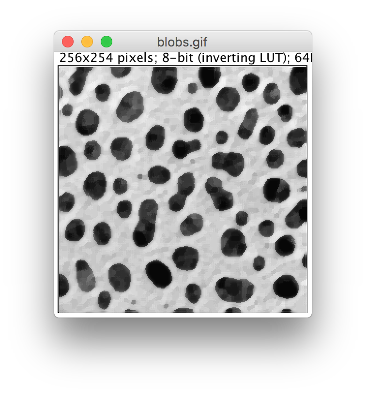
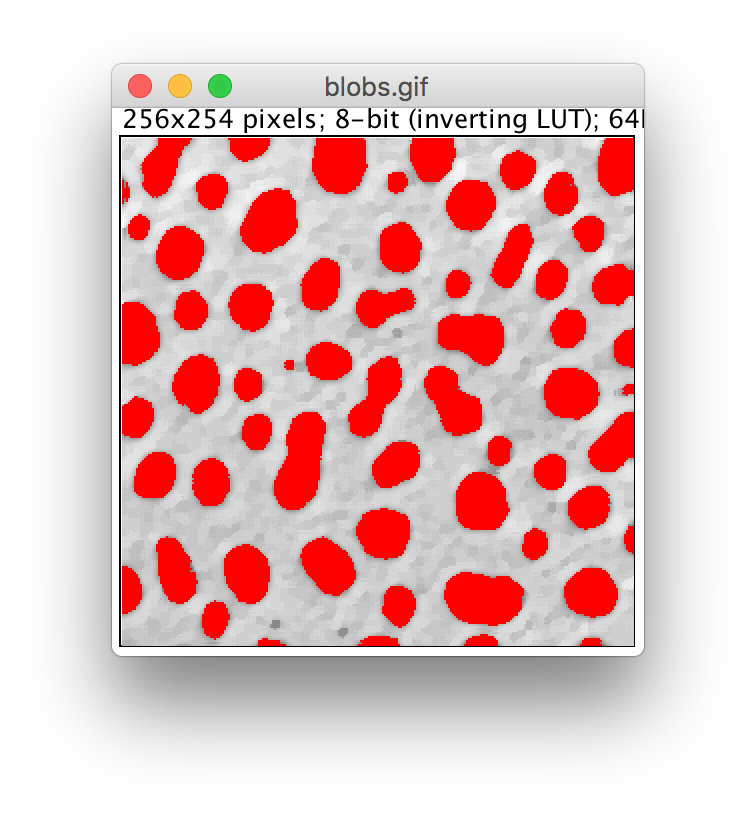
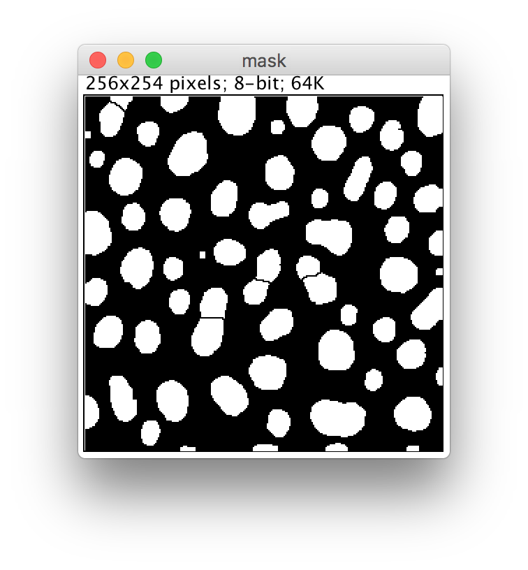
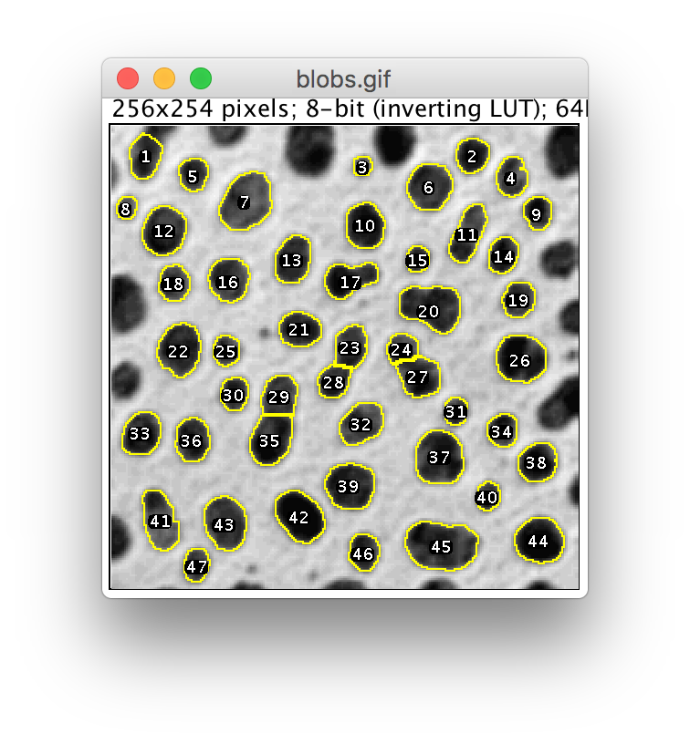
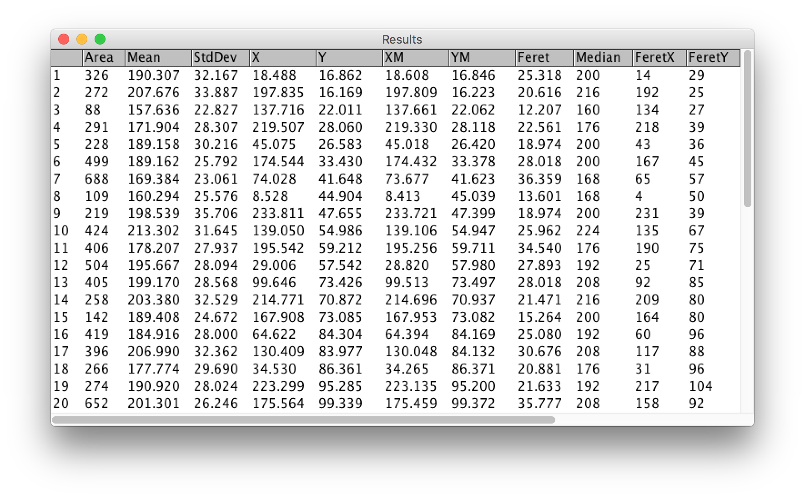

Fiji
Segmentation


What is segmentation?
Partitioning a digital image into multiple segments!


How to segment?
1. Preprocess
Prepare your image for thresholding
➙ 
2. Threshold
Separate foreground from background
➙ 
3. Cleanup
Improve mask with morphological operations
➙ 
4. Identify
Split foreground into objects
➙ 
5. Analyze
Measure the original data
➙ 
Advanced techniques:
- active contours (mostly interactive)
- graph-based methods
- machine learning
Separating objects

Uneven illumination

Skeletonization

Spatial resolution

Machine learning